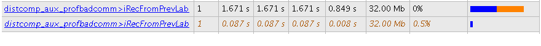
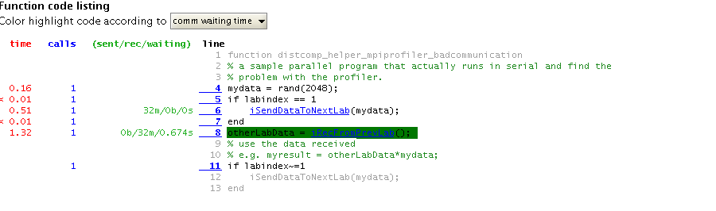
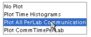
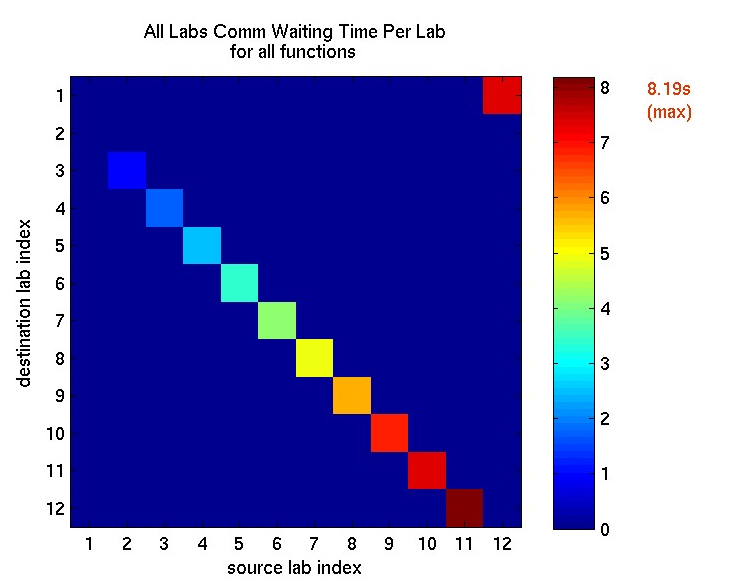
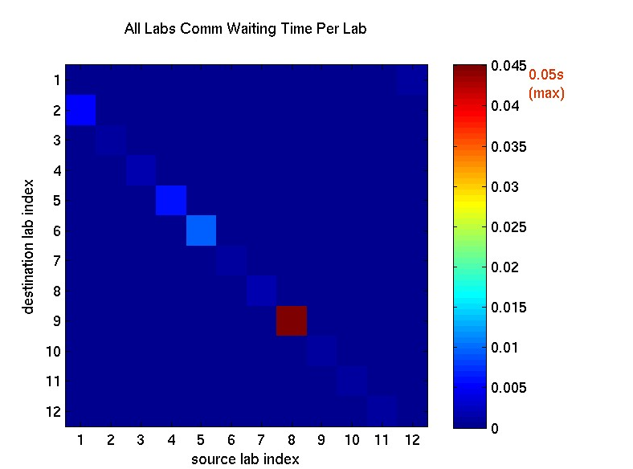

Profiling Explicit Parallel Communication
This demo describes how to profile explicit communication to the nearest neighbor lab. It illustrates the use of labSend, labReceive, and labSendReceive, showing both the slow (incorrect) and the fast (optimal) way of implementing this algorithm. The problem is explored using the parallel profiler.
Contents
Prerequisites:
- Interactive Parallel Mode in Parallel Computing Toolbox™ (See pmode in the User's Guide.)
- Using the Parallel Profiler in Pmode
The figures in this demo are produced from a 12-node cluster.
The example code in this demo involves explicit communication. In MATLAB® explicit communication is synonymous with directly using Parallel Computing Toolbox communication primitives (e.g. labSend, labReceive, labSendReceive, labBarrier). Performance problems involving this type of communication, if not related to the underlying hardware, can be difficult to trace. With the parallel profiler many of these problems can be interactively identified. It is important to remember you can separate the various parts of your program into separate functions. This can help when profiling, because some data is collected only for each function.
The Algorithm
The algorithm we are profiling in this demo is a nearest neighbor communication pattern. Each MATLAB worker needs data only from itself and one neighboring lab. This type of data parallel pattern lends itself well to many matrix problems, but when done incorrectly, can be needlessly slow. In other words, each lab depends on data that is already available on an adjacent lab. For example, on a four-lab cluster, lab 1 wants to send some data to lab 2 and needs some data from lab 4 so each lab depends on only one other lab:
1 depends on -> 4
2 depends on -> 1
3 depends on -> 2
4 depends on -> 3
It is possible to implement any given communication algorithm using labSend and labReceive. labReceive always blocks your program until the communication is complete, while labSend might not if the data is small. Using labSend first, though, doesn't help in most cases.
One way to accomplish this algorithm is to have every lab wait for a receive, and only one lab start the communication chain by completing a send and then a receive. Alternatively, we can use labSendReceive, and at first glance it may not be apparent that there should be a major difference in performance.
You can view the code for pctdemo_aux_profbadcomm and pctdemo_aux_profcomm to see the complete implementations of this algorithm. Look at the first file and notice that it uses labSend and labReceive for communication.
It is a common mistake to start thinking in terms of labSend and labReceive when it is not necessary. Looking at how this pctdemo_aux_profbadcomm implementation performs will give us a better idea of what to expect.
Profiling the labSend Implementation
P>> labBarrier;% to ensures the labs all start at the same time
P>> mpiprofile reset;
P>> mpiprofile on;
P>> pctdemo_aux_profbadcomm;
1 sending to 2
receive from 42 receive from 1
sending to 33 receive from 2
sending to 44 receive from 3
sending to 1P>> mpiprofile viewer;
1 Sending pmode lab2client to the MATLAB client for asynchronous evaluation.
The Function Summary Report is displayed. On this page, you can see time spent waiting in communications as an orange bar under the Total Time Plot heading. The data below shows that considerable amount of time was spent waiting. Let's see how the parallel profiler helps to identify the causes of these waits.

Quickstart Steps
- In the profiler Function Summary Report, look at the pctdemo_aux_profbadcomm entry and click Compare max vs. min TotalTime. Observe the large orange waiting time indicated under the function iRecFromPrevLab. This is an early indication that there is something wrong with a corresponding send, either because of network problems or algorithm problems.
- Use the top toolbar table to click Plot All Per Lab Communication. The first figure in this view shows all the data received by each lab. In this example each lab is receiving the same amount of data from the previous lab, so it doesn't seem to be a data distribution problem. The second figure shows the various communication times including the time spent waiting for communication. In the third figure, the Receive Comm Waiting Time plot shows a stepwise increase in waiting time. An example Receive Comm Waiting Time plot can be seen below using a 12-node cluster. It is good to go back and check what is happening on the source lab.
- Browse what's happening on lab 1. a.) In the Profiler click Home. b.) Click the top-level pctdemo_aux_profbadcomm function to go to the Function Detail Report. c.) Be sure that Show function listing is selected. d.) Scroll down and see where lab 1 spends time and which lines are covered. e.) For comparison, look at the Busy Line table and select the last lab using the Goto lab listbox.
To see all the profiled lines of code, scroll down to the last item in the page. An example of this annotated code listing can be seen below.

Communication Plots Using a Larger Non-local Cluster
To clearly see the problem with our usage of labSend and labReceive, look at the following Receive Comm Waiting Time plot from a 12-node cluster.


In the plot above, you can see the unnecessary waiting using Plot All PerLab Communication. This waiting time increases because labReceive blocks until the corresponding paired labSend has completed. Hence, you get sequential communication even though subsequent labs only need the data that is originating in the immediate neighbor labindex.
Using labSendReceive to Implement this Algorithm
You can use labSendReceive to send and receive data simultaneously from the lab that you depend on to get minimal waiting time. See this in the corrected version of the communication pattern implemented in pctdemo_aux_profcomm. Clearly, using labSendReceive is not possible if you need to receive data before you can send it. In such cases, use labSend and labReceive to ensure chronological order. However, in cases like this example, when there is no need to receive data before sending, use labSendReceive. Let's profile this version without resetting the data collected on the previous version (use mpiprofile resume).
P>> labBarrier; P>> mpiprofile resume; P>> pctdemo_aux_profcomm;
1 sending to 2 receiving from 4 2 sending to 3 receiving from 1 3 sending to 4 receiving from 2 4 sending to 1 receiving from 3
P>> mpiprofile viewer;
1 Sending pmode lab2client to the MATLAB client for asynchronous evaluation.
This corrected version reduces the waiting time to effectively zero. To see this, click Plot All PerLab Communication after selecting pctdemo_aux_profcomm. The same communication pattern, described above, now spends nearly no time waiting using labSendReceive (see the Receive Comm Waiting Time plot below).

The Plot Color Scheme
For each 2-D image plot, the coloring scheme is normalized to the task at hand. Therefore, do not use the coloring scheme in the plot shown above to compare with other plots, since colors are normalized and are dependent on the maximum value (seen in the top right in brown). Using the max value in this demo is the best way to compare the huge difference in waiting times when we use pctdemo_aux_profcomm instead of pctdemo_aux_profbadcomm.